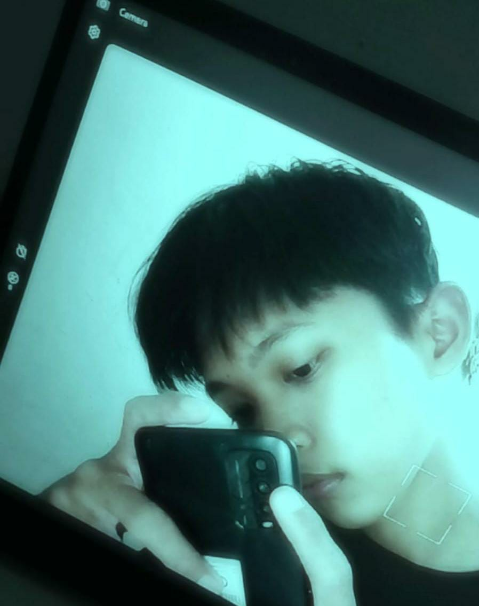

Foto Profil

📝 Tentang Saya
Halo! Perkenalkan nama saya Muhammad Nabil Hidayah.
Saya lahir pada tanggal 5 Juni 2006.
Saya merupakan mahasiswa Program Studi Sistem Informasi
di Universitas Muhammadiyah Sumatera Utara.
Saya memiliki ketertarikan yang besar dalam bidang teknologi,
terutama web development, backend engineering,
dan artificial intelligence.
Saya selalu bersemangat untuk meningkatkan kemampuan teknis dan
problem-solving saya.
📋 Data Pribadi
- Nama Lengkap: Muhammad Muhammad Nabil Hidayah
- Tempat, Tanggal Lahir: Suka Raja, 5 Juni 2006
- Alamat: Dusun III Desa Suka raja Batu bara, Sumatera Utara
- Status: Belum Menikah
- Agama: Islam
- Kewarganegaraan: Indonesia
🎨 Hobi & Minat
- Programming dan pengembangan backend
- Mengelola database
- Mengikuti perkembangan teknologi
- Bermain futsal dan sepak bola
- Membaca komik
- Menonton anime
🎓 Riwayat Pendidikan
-
SD Alwasliyah Suka Raja (2012 - 2017)
Lulus dengan nilai rata-rata 8.5
-
MTS Negeri Batu Bara (2018 - 2021)
Lulus dengan nilai rata-rata 8.5
-
SMK Negeri 1 Air Putih (2021 - 2024)
Jurusan Rekayasa Perangkat Lunak, lulus dengan nilai rata-rata 9.0
-
Universitas Muhammadiyah Sumatera Utara (2024 - Sekarang)
Jurusan Sistem Informasi, IPK 3.79/4.00
💻 Keterampilan
- Programming Languages: PHP, Python, HTML, CSS, Java, JavaScript
- Database: MySQL & Database Management
- Technical: Windows OS Installation & Configuration
- Tools: Git, VS Code, Sublime Text, Adobe Dreamweaver ,Github, NetBeans
- Languages : Indonesia (Native), English (Advanced)
💼 Pengalaman Kerja
-
Technical Intern - CV. AJ Com (3 April 2022 - 3 Juli 2022)
Instalasi sistem operasi Windows, pengelolaan dokumen pelanggan, dan membantu instalasi Wi-Fi.
-
Magang (Intern) Departemen Pengadaan - PT INALUM (April 2023 - Juli 2023)
Mendaftarkan perusahaan mitra, memverifikasi dokumen vendor, serta membantu penyusunan laporan pengadaan.
📞 Kontak Saya
📱 Social Media
Instagram |
LinkedIn |
GitHub